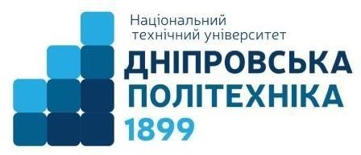

Міністерство освіти і науки України
Національний технічний університет
«Дніпровська політехніка»

Лабораторна робота з дисципліни
«Web-технології та web-дизайн»
Виконав: студент гр. 123-20-1
К.О. Дмитренко
Перевірив: доцент каф. ІТКІ
Д.В. Сущевський
Дніпро 2021
Практичне завдання #2
Тема роботи: Використання CSS для кастомізації інтерфейсу користувача
Мета: Оволодіти базовими навичками роботи зі стилями, навчитися роботі з селекторами та змінювати властивості HTML-елементів
Хід роботи
Розклад 123-20-1
День
Пара
Назва
Викладач
Аудиторія
#
Час
Понеділок
I
8:00-9:20
Інф. UML та GitHub технології
Гаркуша І.М.
1/78
II
9:35-10:55
Комп. мережі
Панферова Я. В.
1/122-4
III
11:20-12:40
IV
12:55-14:15
Вівторок
I
8:00-9:20
II
9:35-10:55
Теорія інф. та кодування
Кожевніков А. В.
1/77
III
11:20-12:40
Комп. електроніка
Ткаченко С.М.
1/74
IV
12:55-14:15
Фізкультура і спорт
Середа
I
8:00-9:20
II
9:35-10:55
Інф. UML та GitHub (знам.)
Гаркуша І. М.
1/77
III
11:20-12:40
IV
12:55-14:15
Комп. мережі
Каштан В. Ю.
1/74
Четвер
I
8:00-9:20
Web-технології та Web-дизайн (чисельник)
Сущевський Д.В.
1/77
II
9:35-10:55
Системне програмування
Ткаченко С.М.
1/74
III
11:20-12:40
Комп. електроніка
Ткаченко С.М.
1/78
IV
12:55-14:15
ТІК (чисельник)
Кожевніков А. В.
4/55
V
14:30-15:50
Web-технології та Web-дизайн
Сущевський Д.В.
1/77
П'ятниця
I
8:00-9:20
Системне програмування
Ткаченко С. М.
1/78
II
9:35-10:55
III
11:20-12:40
IV
12:55-14:15
Висновок
Під час виконання лабораторної роботи було
опрацьовано та закріплено матеріал, який стосується CSS.
Було вивчено принцип користування селекторами.